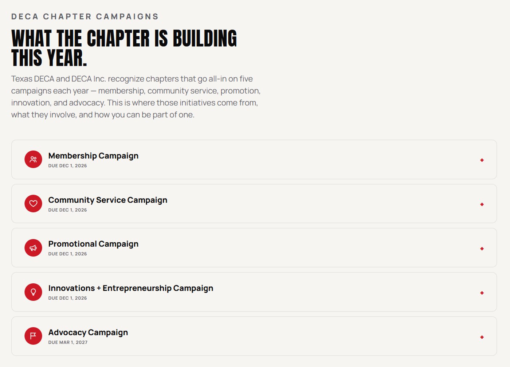
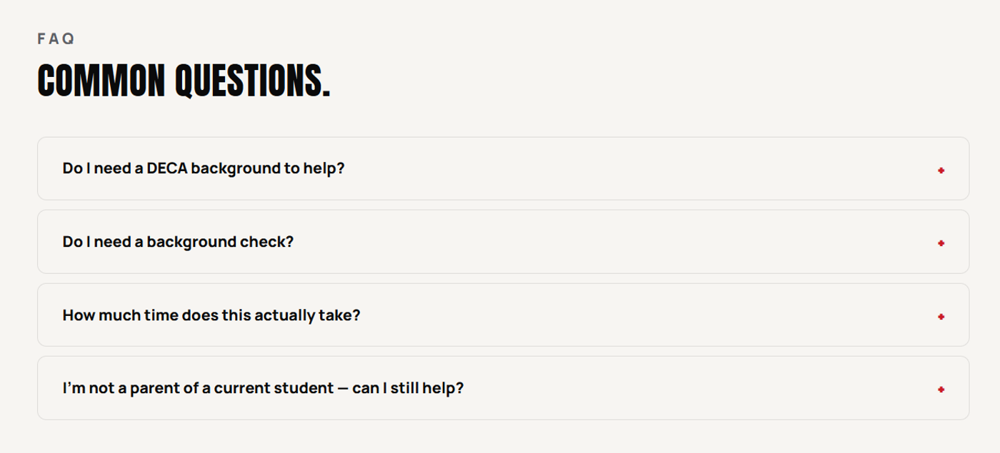

The season, mapped
I built one calendar system for a season that runs on three back-to-back conferences: District, State, and ICDC. The homepage surfaces what's next with dates and venues at a glance, and the full calendar page adds a list/grid toggle covering every chapter meeting and prep session in between. Chapter meetings, competitions, and deadlines finally live in one place instead of three.


A reason to stay active, competitor or not
Non-competitive members were the chapter's biggest drop-off risk. With no competition on their calendar, there was nothing pulling them back in through the year. I built an information hub on the Members page laying out five ways to stay involved all year: membership, community service, promotional, innovation & entrepreneurship, and advocacy campaigns, each with what it involves and how to get in.

Choosing an event shouldn't be the hard part
Competitors choose from dozens of events across five career clusters, enough to overwhelm anyone still deciding where to compete. I built a two-question finder that narrows the full list down to a recommended category in seconds, trading a wall of event names for a quick, guided path to the right fit.
Four audiences, four different answers
A member, a parent, a competitor, and a volunteer walk in with different questions, so each gets its own page instead of one page trying to answer everyone, right down to its own FAQ. Parents get travel logistics and how to follow their student's season; volunteers get exactly what judging or mentoring actually involves. Nobody digs through content meant for somebody else.

